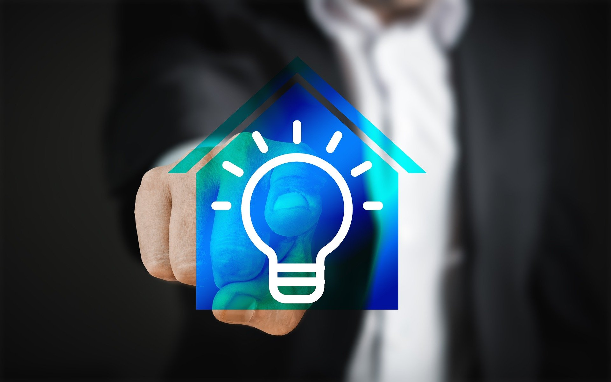
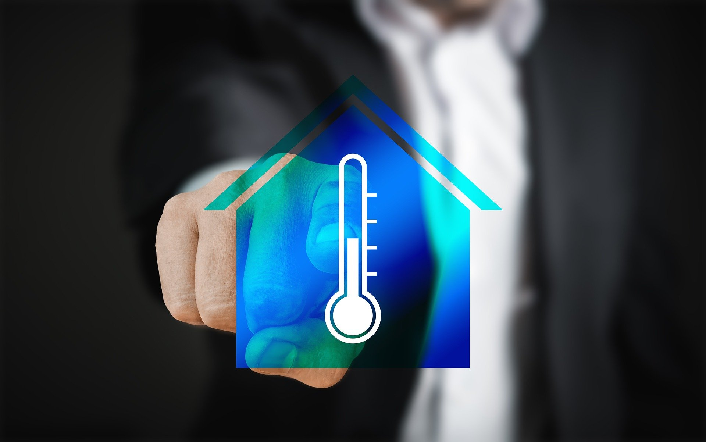
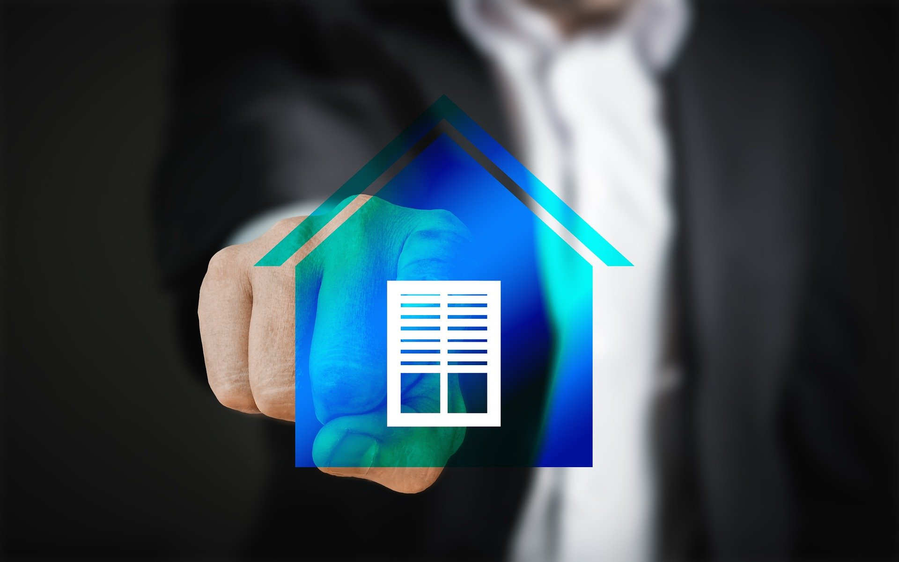
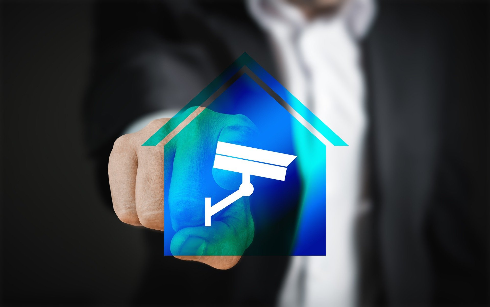
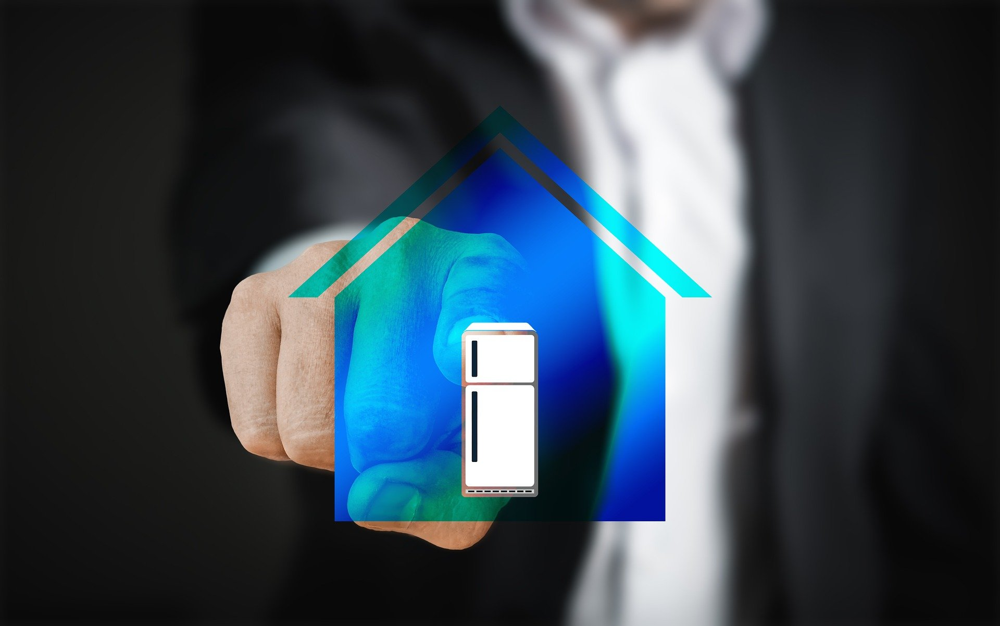
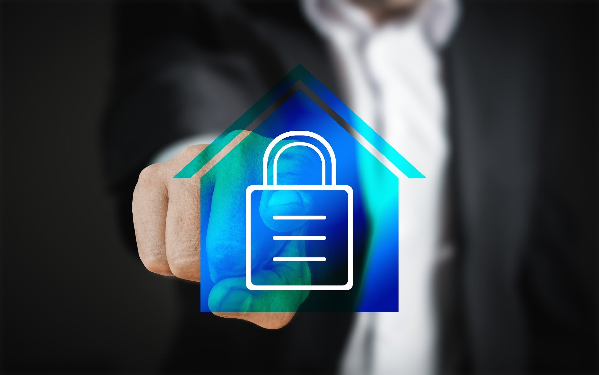

Servicios necesarios.
Iluminación domotizada.
Si quieres ahorrar electricidad al mismo tiempo que mejoras la seguridad y confort de tu casa no puedes prescindir de un buen sistema de iluminación automatizado. Las casas inteligentes cuentan con un programa de luces no solo para interior, sino también para exterior mediante el cual se puede controlar la intensidad, así como la hora de encendido y apagado de las mismas. De igual manera, se puede controlar la entrada natural de la luz hacia el interior de la casa colocando persianas, cortinas y toldos inteligentes que pueden ser controlados fácilmente desde un smartphone o tablet.
Sistemas de climatización inteligentes.
Parte del calor que entra en una casa se puede controlar con la entrada de luz natural hacia ella. Por ejemplo, en invierno usaremos menos calefacción si dejamos el paso de los rayos solares. Y en verano usaremos menos aire acondicionado si cubrimos nuestras ventanas con persianas, toldos o cortinas inteligentes. Pero, además los sistemas de climatización automatizados ahorran energía de manera considerable. Acciones como encender, apagar o regular la temperatura de una casa ahora son programables. Esta es una inversión altamente rentable a medio y largo plazo. Gracias a la climatización domótica se consigue coordinar el control de la temperatura en el interior de la vivienda para un mejor aprovechamiento de la energía.
Sistemas de ventilación de doble flujo.
Esta tecnología nos permite ventilar la casa sin necesidad de abrir las ventanas. De esta manera, no solo se evitan las fugas de calor o frío dependiendo de la época del año, sino que también se filtra el aire que entra hacia el interior de la casa reduciendo el riesgo de alergias (polvo, ácaros, contaminación…), así como evitando la entrada de ruidos indeseados y malos olores desde el exterior y hacia el interior de la vivienda.
Sistemas de seguridad inteligentes.
Garantizar la seguridad en el hogar es otro de los objetivos principales de la domótica. Para ello, se utilizan sistemas que incluyen la instalación de alarmas, cámaras, sensores de movimiento e incluso la simulación de presencia en casa por medio de la programación de apertura y cierre de persianas y luces. Un sistema que se está utilizando mucho en la actualidad es la apertura y cierre de puertas sin necesidad de llaves y a través de contraseña para el personal de mantenimiento y limpieza.
Electrodomésticos inteligentes.
Toda casa domótica que se precie ha de contar con electrodomésticos automatizados capaces de recopilar información con el objetivo de ahorrar energía. Se trata de lavavajillas, lavadoras, neveras, televisores que se conectan a Internet a fin de adaptarse a las necesidades y comportamientos de cada familia.
Sistemas de accesibilidad automatizados.
Las casas inteligentes también ofrecen mejoras en los accesos y transitabilidad de la vivienda especialmente para personas con discapacidad. Rampas que se despliegan desde el móvil, puertas y portones que se abren sin necesidad de tocarlos, etc. En definitiva, un paso más hacia la eliminación de barreras arquitectónicas que se consigue gracias a las nuevas tecnologías.